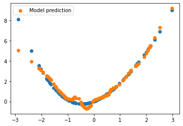

Contents
import jax
import jax.numpy as jnp
import numpy as np
import matplotlib.pyplot as plt
%matplotlib inline
layer_sizes = [1, 20, 20, 1]
params = {}
for i, (n_in, n_out) in enumerate(zip(layer_sizes[:-1], layer_sizes[1:])):
params[f"layer_{i}"] = {"weights": np.random.randn(n_in, n_out) , "biases": np.ones(n_out, )}
params
{'layer_0': {'weights': array([[ 1.58624849, -0.48207961, -0.06656138, 0.28847397, -0.72837954,
-0.26179434, 0.60561845, 0.36503041, -0.39059719, 1.40099456,
0.51276521, -1.78354468, 0.73386684, -0.9956196 , -0.2772467 ,
-0.30027524, 0.63527819, 1.11288346, 2.301225 , -1.51542451]]),
'biases': array([1., 1., 1., 1., 1., 1., 1., 1., 1., 1., 1., 1., 1., 1., 1., 1., 1.,
1., 1., 1.])},
'layer_1': {'weights': array([[-0.83113002, 0.08761339, -0.99867221, 1.51377486, 0.13757864,
0.06041036, 0.96474202, -0.73320776, -0.89154823, 0.89247438,
0.6394674 , -0.74567292, -0.52840975, 1.37689843, 1.04675935,
1.69073655, 1.21041975, -0.04023921, 0.7199621 , 0.06528007],
[ 0.46664445, 0.01137196, 0.13655003, 0.60662122, 0.40729938,
-1.85389977, 1.52073463, 0.85013093, 0.35542535, 0.65271863,
-0.46367151, 0.1419758 , -1.4942245 , 1.84306218, 0.52968158,
-0.63244948, 0.96736887, 1.00884999, 0.20110064, 0.18654143],
[-0.1433242 , 0.5425532 , 1.50533031, 0.35936276, -0.98793611,
-1.08689294, 1.07887186, 0.26970404, 1.1766185 , -0.12513243,
0.70387498, 1.32334329, -0.15293647, -1.55577053, 0.21568414,
-0.67390035, 0.71426818, -1.15303417, 0.84096227, 0.30978335],
[-1.17894355, -0.39187288, 0.10935048, -0.92520963, -1.22653694,
1.61582588, -0.36629691, -0.67276381, -0.65723873, -2.28187142,
0.59707607, 0.79822605, 1.38591721, 1.37937755, 0.84478553,
-1.37248674, 0.96938756, -1.35865575, -1.8364023 , 0.09692196],
[ 0.96843588, -0.70286376, -0.11080333, 0.81010664, -1.86282571,
1.61106586, 0.33747999, -0.69515983, -0.79314654, -0.3626622 ,
-0.35091088, 1.29946224, 1.69052372, 0.04964084, -0.40827183,
-1.15420563, 0.15384504, 2.24939821, -0.71763934, 0.36186684],
[-0.30743174, 1.20222789, -0.00787041, -0.82170707, -0.40763527,
1.3525921 , 0.77420695, 0.09357404, -0.99908068, 0.13256336,
1.7128903 , 0.55369993, -1.82545028, -1.04129142, 0.16068455,
0.33982203, -0.85403075, -1.24220604, 0.43486441, 0.83072115],
[ 1.00504894, -0.56899136, 1.05726966, -0.29901374, 0.24922139,
-0.38523863, -0.44764855, -1.28809878, 0.83977103, 0.8357055 ,
0.13318704, -1.32385101, 0.29537645, -0.51887552, -0.65452628,
-0.3872977 , -0.2587259 , 0.88107976, 0.38139358, 0.17714661],
[ 1.37363875, 2.8297425 , -1.18159995, -0.88104096, -0.36711551,
0.13146272, -0.05519859, -0.0845965 , 1.05586734, -0.31173629,
0.76682072, 0.09727761, 0.06122134, 1.53336398, 0.50181645,
-0.6088516 , -0.02653517, -0.24281463, -0.62959467, 1.41422213],
[-0.53770256, 0.08223508, 0.49875564, -2.50608091, -0.80648252,
-0.28482686, 0.23423148, 0.8299524 , 0.68121722, 0.06900759,
-2.18584613, -2.84299942, 0.8805421 , 0.40760571, 1.36169273,
1.75445712, -1.83500755, -0.51927613, 2.40949014, -0.70192537],
[ 0.95291829, -0.67563975, -0.96858278, -0.9903098 , 0.06694221,
-0.63465127, 0.61583062, 0.4737178 , 0.38722789, -0.54587145,
-1.22768255, 0.12526519, -0.41461096, 1.61274527, -1.1141767 ,
0.13586733, 0.55359233, 2.49236576, -0.31064819, -0.75309893],
[ 0.36888581, -0.8329229 , -0.21459491, 0.46165875, 0.86817619,
1.98381744, -1.17280232, -0.31317574, 1.16120385, -0.8111519 ,
0.173804 , -0.1790687 , 0.176811 , -0.71068979, -0.85898027,
0.6228575 , -1.68548068, 0.56414867, 0.18787945, -0.98037468],
[ 2.37332988, -1.05211766, -1.13722665, 0.8503885 , 1.60326706,
0.4621993 , 0.08560986, 0.95283336, -0.11692018, -0.61837242,
-0.79283105, 0.6423125 , -0.83293071, -1.24368488, -1.99710286,
-1.19986326, -0.80446913, -1.23305201, -0.9034063 , -0.34798963],
[ 1.04713204, -0.67392437, 1.74029265, 0.5687027 , 0.30260136,
0.38012344, 0.53424627, -0.68333054, -2.29693584, 1.3088899 ,
-0.21625987, 1.72467194, 0.56167761, 0.51228598, 1.82469973,
-0.79812458, 0.5131396 , 1.37638283, -0.80008684, -0.39652689],
[ 0.7155657 , -1.79679057, -0.85382034, 0.49551735, 1.9139346 ,
0.05504493, 0.79112323, -1.10015652, -0.24734587, -0.86979431,
1.25348243, 1.78624189, 1.07857611, 1.42267553, -1.06456354,
0.09606594, -0.45469834, -0.71899834, -0.49635588, 1.63018692],
[ 0.32405479, -0.19741757, 1.43342148, -0.29851651, -1.10702969,
-0.33532363, -0.96082629, 0.38309443, 0.56329664, -0.86216374,
-0.36088441, -0.02050263, 1.18283655, -0.87957359, -0.62649663,
-0.53610838, -1.24889226, 0.29400394, 0.61004293, 0.24340604],
[-1.88842036, -0.04773698, 1.10507537, 0.53889525, 0.83623573,
0.11613689, -0.3137357 , -1.07205388, -0.06046712, 0.15296722,
-0.15287741, -1.20818132, -0.20143778, 0.83245775, 0.33655676,
0.25175303, -1.48334111, -0.62156118, -1.67613692, -0.27068787],
[-0.82781439, -0.42599023, -0.48726898, 1.2045477 , -1.23958099,
-0.36925021, 0.2008841 , -1.21141299, -0.1675607 , 2.16071312,
-0.31704247, -2.60972597, 0.27506628, 0.93188965, -2.54878833,
1.1325801 , -1.45519662, 0.63716176, -0.53603662, 1.35751848],
[-1.68636571, 0.06500735, 0.82419804, -1.00258063, -1.21742986,
-0.79781855, 1.21448207, -1.56604107, 0.54736003, -1.68255512,
1.33043563, 1.79650862, -0.14497101, -1.48314911, -0.11371459,
0.11293355, -0.18728192, 1.0461157 , -0.44316619, 0.56797351],
[ 1.53994437, 0.36401012, -0.28184377, 0.48943717, -0.16352717,
-0.21426235, 1.75404551, 0.0813855 , 0.12406145, 0.59692929,
0.43687888, 1.87909672, 0.85887417, 0.64074285, -0.44143116,
1.8421936 , -0.00548316, 0.21748123, -1.93286265, 1.27336126],
[ 0.2018317 , -0.07453161, 0.7431541 , 0.93041141, 1.34645374,
0.50825776, -0.03499294, 0.34791701, -0.84565841, 0.10440079,
-0.77986984, -0.28743187, 1.60760054, -0.25824201, -1.37899467,
-1.43921992, -0.38310221, -0.15240408, -1.2892467 , 0.02909324]]),
'biases': array([1., 1., 1., 1., 1., 1., 1., 1., 1., 1., 1., 1., 1., 1., 1., 1., 1.,
1., 1., 1.])},
'layer_2': {'weights': array([[ 0.1282088 ],
[ 1.84328707],
[ 0.12817819],
[-1.02422689],
[ 0.47181382],
[-0.83608304],
[ 0.43648763],
[-1.53716223],
[-0.5490471 ],
[-0.62108926],
[ 1.05440226],
[ 0.42999396],
[ 0.81843907],
[ 0.8708919 ],
[-1.20301429],
[-0.15430688],
[ 1.22176551],
[-0.55455773],
[-0.08405201],
[ 0.67699578]]),
'biases': array([1.])}}
jax.tree_structure(params)
PyTreeDef({'layer_0': {'biases': *, 'weights': *}, 'layer_1': {'biases': *, 'weights': *}, 'layer_2': {'biases': *, 'weights': *}})
jax.tree_map(lambda x: x.shape, params)
{'layer_0': {'biases': (20,), 'weights': (1, 20)},
'layer_1': {'biases': (20,), 'weights': (20, 20)},
'layer_2': {'biases': (1,), 'weights': (20, 1)}}
jax.tree_leaves(params)
[array([1., 1., 1., 1., 1., 1., 1., 1., 1., 1., 1., 1., 1., 1., 1., 1., 1.,
1., 1., 1.]),
array([[ 1.58624849, -0.48207961, -0.06656138, 0.28847397, -0.72837954,
-0.26179434, 0.60561845, 0.36503041, -0.39059719, 1.40099456,
0.51276521, -1.78354468, 0.73386684, -0.9956196 , -0.2772467 ,
-0.30027524, 0.63527819, 1.11288346, 2.301225 , -1.51542451]]),
array([1., 1., 1., 1., 1., 1., 1., 1., 1., 1., 1., 1., 1., 1., 1., 1., 1.,
1., 1., 1.]),
array([[-0.83113002, 0.08761339, -0.99867221, 1.51377486, 0.13757864,
0.06041036, 0.96474202, -0.73320776, -0.89154823, 0.89247438,
0.6394674 , -0.74567292, -0.52840975, 1.37689843, 1.04675935,
1.69073655, 1.21041975, -0.04023921, 0.7199621 , 0.06528007],
[ 0.46664445, 0.01137196, 0.13655003, 0.60662122, 0.40729938,
-1.85389977, 1.52073463, 0.85013093, 0.35542535, 0.65271863,
-0.46367151, 0.1419758 , -1.4942245 , 1.84306218, 0.52968158,
-0.63244948, 0.96736887, 1.00884999, 0.20110064, 0.18654143],
[-0.1433242 , 0.5425532 , 1.50533031, 0.35936276, -0.98793611,
-1.08689294, 1.07887186, 0.26970404, 1.1766185 , -0.12513243,
0.70387498, 1.32334329, -0.15293647, -1.55577053, 0.21568414,
-0.67390035, 0.71426818, -1.15303417, 0.84096227, 0.30978335],
[-1.17894355, -0.39187288, 0.10935048, -0.92520963, -1.22653694,
1.61582588, -0.36629691, -0.67276381, -0.65723873, -2.28187142,
0.59707607, 0.79822605, 1.38591721, 1.37937755, 0.84478553,
-1.37248674, 0.96938756, -1.35865575, -1.8364023 , 0.09692196],
[ 0.96843588, -0.70286376, -0.11080333, 0.81010664, -1.86282571,
1.61106586, 0.33747999, -0.69515983, -0.79314654, -0.3626622 ,
-0.35091088, 1.29946224, 1.69052372, 0.04964084, -0.40827183,
-1.15420563, 0.15384504, 2.24939821, -0.71763934, 0.36186684],
[-0.30743174, 1.20222789, -0.00787041, -0.82170707, -0.40763527,
1.3525921 , 0.77420695, 0.09357404, -0.99908068, 0.13256336,
1.7128903 , 0.55369993, -1.82545028, -1.04129142, 0.16068455,
0.33982203, -0.85403075, -1.24220604, 0.43486441, 0.83072115],
[ 1.00504894, -0.56899136, 1.05726966, -0.29901374, 0.24922139,
-0.38523863, -0.44764855, -1.28809878, 0.83977103, 0.8357055 ,
0.13318704, -1.32385101, 0.29537645, -0.51887552, -0.65452628,
-0.3872977 , -0.2587259 , 0.88107976, 0.38139358, 0.17714661],
[ 1.37363875, 2.8297425 , -1.18159995, -0.88104096, -0.36711551,
0.13146272, -0.05519859, -0.0845965 , 1.05586734, -0.31173629,
0.76682072, 0.09727761, 0.06122134, 1.53336398, 0.50181645,
-0.6088516 , -0.02653517, -0.24281463, -0.62959467, 1.41422213],
[-0.53770256, 0.08223508, 0.49875564, -2.50608091, -0.80648252,
-0.28482686, 0.23423148, 0.8299524 , 0.68121722, 0.06900759,
-2.18584613, -2.84299942, 0.8805421 , 0.40760571, 1.36169273,
1.75445712, -1.83500755, -0.51927613, 2.40949014, -0.70192537],
[ 0.95291829, -0.67563975, -0.96858278, -0.9903098 , 0.06694221,
-0.63465127, 0.61583062, 0.4737178 , 0.38722789, -0.54587145,
-1.22768255, 0.12526519, -0.41461096, 1.61274527, -1.1141767 ,
0.13586733, 0.55359233, 2.49236576, -0.31064819, -0.75309893],
[ 0.36888581, -0.8329229 , -0.21459491, 0.46165875, 0.86817619,
1.98381744, -1.17280232, -0.31317574, 1.16120385, -0.8111519 ,
0.173804 , -0.1790687 , 0.176811 , -0.71068979, -0.85898027,
0.6228575 , -1.68548068, 0.56414867, 0.18787945, -0.98037468],
[ 2.37332988, -1.05211766, -1.13722665, 0.8503885 , 1.60326706,
0.4621993 , 0.08560986, 0.95283336, -0.11692018, -0.61837242,
-0.79283105, 0.6423125 , -0.83293071, -1.24368488, -1.99710286,
-1.19986326, -0.80446913, -1.23305201, -0.9034063 , -0.34798963],
[ 1.04713204, -0.67392437, 1.74029265, 0.5687027 , 0.30260136,
0.38012344, 0.53424627, -0.68333054, -2.29693584, 1.3088899 ,
-0.21625987, 1.72467194, 0.56167761, 0.51228598, 1.82469973,
-0.79812458, 0.5131396 , 1.37638283, -0.80008684, -0.39652689],
[ 0.7155657 , -1.79679057, -0.85382034, 0.49551735, 1.9139346 ,
0.05504493, 0.79112323, -1.10015652, -0.24734587, -0.86979431,
1.25348243, 1.78624189, 1.07857611, 1.42267553, -1.06456354,
0.09606594, -0.45469834, -0.71899834, -0.49635588, 1.63018692],
[ 0.32405479, -0.19741757, 1.43342148, -0.29851651, -1.10702969,
-0.33532363, -0.96082629, 0.38309443, 0.56329664, -0.86216374,
-0.36088441, -0.02050263, 1.18283655, -0.87957359, -0.62649663,
-0.53610838, -1.24889226, 0.29400394, 0.61004293, 0.24340604],
[-1.88842036, -0.04773698, 1.10507537, 0.53889525, 0.83623573,
0.11613689, -0.3137357 , -1.07205388, -0.06046712, 0.15296722,
-0.15287741, -1.20818132, -0.20143778, 0.83245775, 0.33655676,
0.25175303, -1.48334111, -0.62156118, -1.67613692, -0.27068787],
[-0.82781439, -0.42599023, -0.48726898, 1.2045477 , -1.23958099,
-0.36925021, 0.2008841 , -1.21141299, -0.1675607 , 2.16071312,
-0.31704247, -2.60972597, 0.27506628, 0.93188965, -2.54878833,
1.1325801 , -1.45519662, 0.63716176, -0.53603662, 1.35751848],
[-1.68636571, 0.06500735, 0.82419804, -1.00258063, -1.21742986,
-0.79781855, 1.21448207, -1.56604107, 0.54736003, -1.68255512,
1.33043563, 1.79650862, -0.14497101, -1.48314911, -0.11371459,
0.11293355, -0.18728192, 1.0461157 , -0.44316619, 0.56797351],
[ 1.53994437, 0.36401012, -0.28184377, 0.48943717, -0.16352717,
-0.21426235, 1.75404551, 0.0813855 , 0.12406145, 0.59692929,
0.43687888, 1.87909672, 0.85887417, 0.64074285, -0.44143116,
1.8421936 , -0.00548316, 0.21748123, -1.93286265, 1.27336126],
[ 0.2018317 , -0.07453161, 0.7431541 , 0.93041141, 1.34645374,
0.50825776, -0.03499294, 0.34791701, -0.84565841, 0.10440079,
-0.77986984, -0.28743187, 1.60760054, -0.25824201, -1.37899467,
-1.43921992, -0.38310221, -0.15240408, -1.2892467 , 0.02909324]]),
array([1.]),
array([[ 0.1282088 ],
[ 1.84328707],
[ 0.12817819],
[-1.02422689],
[ 0.47181382],
[-0.83608304],
[ 0.43648763],
[-1.53716223],
[-0.5490471 ],
[-0.62108926],
[ 1.05440226],
[ 0.42999396],
[ 0.81843907],
[ 0.8708919 ],
[-1.20301429],
[-0.15430688],
[ 1.22176551],
[-0.55455773],
[-0.08405201],
[ 0.67699578]])]
activations = np.array([jax.nn.relu, jax.nn.relu, lambda x: x])
def forward(params, x):
for i, (layer_name, layer_params) in enumerate(params.items()):
x = activations[i](x @ layer_params['weights'] + layer_params['biases'])
return x
xs = np.random.normal(size=(128, 1))
ys = xs ** 2 + np.sin(xs)
z = forward(params, xs)
WARNING:absl:No GPU/TPU found, falling back to CPU. (Set TF_CPP_MIN_LOG_LEVEL=0 and rerun for more info.)
z.shape
(128, 1)
def loss_function(params, x, y):
return jnp.mean((forward(params, x) - y) ** 2)
loss_function(params, xs, ys)
DeviceArray(285.34406, dtype=float32)
grads = jax.grad(loss_function)(params, xs, ys)
grads
{'layer_0': {'biases': DeviceArray([ 4.962083 , 31.245243 , 52.407436 , 135.34401 ,
-23.685345 , 49.813713 , -40.406395 , 199.18797 ,
-18.291636 , -18.264145 , -163.57394 , -51.141823 ,
13.088825 , 102.23715 , -12.869639 , -33.645187 ,
-74.88072 , 79.60194 , 89.00325 , -3.7007694], dtype=float32),
'weights': DeviceArray([[ 15.230114 , 10.266151 , 64.96087 , 110.17115 ,
-14.276098 , 73.153625 , -64.71704 , 171.84909 ,
-43.3368 , -19.031237 , -134.41649 , 15.381988 ,
-13.06599 , -29.864737 , -19.334276 , -58.416428 ,
-98.74245 , 69.97822 , 83.35802 , -1.1628652]], dtype=float32)},
'layer_1': {'biases': DeviceArray([ 3.9238908, 31.265022 , 3.385695 , -31.346947 ,
4.3791814, -25.140728 , 13.358909 , -7.5224185,
-13.727447 , -12.191098 , 25.225609 , 13.160169 ,
25.048714 , 26.661013 , 0. , -3.2552845,
9.904303 , -13.76413 , 0. , 20.719774 ], dtype=float32),
'weights': DeviceArray([[ 7.61185312e+00, 9.14021759e+01, 5.12813330e+00,
-6.08091202e+01, 8.59189510e-01, -4.70722466e+01,
2.59145947e+01, 0.00000000e+00, -3.25973320e+01,
-3.45939751e+01, 6.23329926e+01, 2.55290661e+01,
4.85913429e+01, 5.17055092e+01, 0.00000000e+00,
-8.84766579e+00, 4.03319321e+01, -3.29157333e+01,
0.00000000e+00, 4.01937485e+01],
[ 3.04494214e+00, 1.33750563e+01, 3.04105425e+00,
-2.43252468e+01, 6.12957335e+00, -1.98568649e+01,
1.03665237e+01, -1.19820204e+01, -8.23640442e+00,
-5.65832520e+00, 1.44163151e+01, 1.02122984e+01,
1.94378147e+01, 2.07002220e+01, 0.00000000e+00,
-1.62419593e+00, 1.19936848e+00, -8.18991852e+00,
0.00000000e+00, 1.60785599e+01],
[ 3.79467511e+00, 2.87415771e+01, 3.33810949e+00,
-3.03146763e+01, 4.62086058e+00, -2.43869724e+01,
1.29189892e+01, -8.13816261e+00, -1.29356356e+01,
-1.12510386e+01, 2.36685219e+01, 1.27267962e+01,
2.42238388e+01, 2.57846165e+01, 0.00000000e+00,
-3.02061963e+00, 8.62751293e+00, -1.29605007e+01,
0.00000000e+00, 2.00374641e+01],
[ 4.48390675e+00, 4.22015152e+01, 3.59192681e+00,
-3.58207664e+01, 3.33175564e+00, -2.84074421e+01,
1.52654877e+01, -4.85381746e+00, -1.71591129e+01,
-1.62652683e+01, 3.19739342e+01, 1.50383873e+01,
2.86236610e+01, 3.04592705e+01, 0.00000000e+00,
-4.27231026e+00, 1.54378481e+01, -1.72470284e+01,
0.00000000e+00, 2.36768970e+01],
[ 2.93933177e+00, 8.66818428e+00, 2.93863010e+00,
-2.34815655e+01, 7.02386999e+00, -1.91681538e+01,
1.00069723e+01, -1.42604790e+01, -6.90179348e+00,
-3.98447323e+00, 1.17183342e+01, 9.85809612e+00,
1.87636433e+01, 1.99877949e+01, 0.00000000e+00,
-1.20422208e+00, 2.48701945e-02, -6.82757759e+00,
0.00000000e+00, 1.55208979e+01],
[ 3.41566753e+00, 2.13399887e+01, 3.19853663e+00,
-2.72868862e+01, 5.32973576e+00, -2.21761322e+01,
1.16286612e+01, -9.94421387e+00, -1.06131611e+01,
-8.49373150e+00, 1.91014080e+01, 1.14556627e+01,
2.18043938e+01, 2.32140446e+01, 0.00000000e+00,
-2.33231831e+00, 4.88252831e+00, -1.06033516e+01,
0.00000000e+00, 1.80361462e+01],
[ 5.11670446e+00, 5.42249718e+01, 3.83577108e+00,
-4.08760185e+01, 2.24323559e+00, -3.21104851e+01,
1.74198513e+01, -2.12526488e+00, -2.09318371e+01,
-2.07443581e+01, 3.93929596e+01, 1.71606922e+01,
3.26631966e+01, 3.47565536e+01, 0.00000000e+00,
-5.39041662e+00, 2.15213585e+01, -2.10760765e+01,
0.00000000e+00, 2.70183239e+01],
[ 4.63246965e+00, 4.51038895e+01, 3.64659858e+00,
-3.70076027e+01, 3.05357409e+00, -2.92740078e+01,
1.57712698e+01, -4.14492512e+00, -1.80698185e+01,
-1.73464870e+01, 3.37648315e+01, 1.55366421e+01,
2.95720310e+01, 3.14672642e+01, 0.00000000e+00,
-4.54221344e+00, 1.69063644e+01, -1.81713333e+01,
0.00000000e+00, 2.44613609e+01],
[ 3.17692304e+00, 1.64568691e+01, 3.10645437e+00,
-2.53796215e+01, 5.79740906e+00, -2.07175465e+01,
1.08158550e+01, -1.11357374e+01, -9.12933254e+00,
-6.72937441e+00, 1.61812458e+01, 1.06549454e+01,
2.02803440e+01, 2.15948906e+01, 0.00000000e+00,
-1.89182079e+00, 2.51951647e+00, -9.09713173e+00,
0.00000000e+00, 1.67754745e+01],
[ 7.09853172e+00, 8.43789139e+01, 4.84204483e+00,
-5.67083397e+01, 9.66265261e-01, -4.39721947e+01,
2.41669979e+01, 0.00000000e+00, -3.03935699e+01,
-3.19775963e+01, 5.79993210e+01, 2.38074665e+01,
4.53144913e+01, 4.82186470e+01, 0.00000000e+00,
-8.19454765e+00, 3.67783661e+01, -3.06790638e+01,
0.00000000e+00, 3.74832077e+01],
[ 4.92196846e+00, 5.07047653e+01, 3.75491428e+00,
-3.93203316e+01, 2.52709603e+00, -3.09645844e+01,
1.67568722e+01, -2.81063509e+00, -1.98272667e+01,
-1.94329758e+01, 3.72208176e+01, 1.65075760e+01,
3.14200745e+01, 3.34337616e+01, 0.00000000e+00,
-5.06305838e+00, 1.97402325e+01, -1.99550114e+01,
0.00000000e+00, 2.59900360e+01],
[ 3.38254404e+00, 1.38063407e+00, 3.38173532e+00,
-2.70222645e+01, 1.08550873e+01, -2.20584507e+01,
1.15158854e+01, -2.40215492e+01, -5.01981497e+00,
-1.15244269e+00, 7.52593374e+00, 1.13445673e+01,
2.15929470e+01, 2.30196495e+01, 0.00000000e+00,
-4.82996941e-01, 0.00000000e+00, -4.86530113e+00,
0.00000000e+00, 1.78612366e+01],
[ 5.40134525e+00, 5.90870628e+01, 3.96312213e+00,
-4.31499519e+01, 1.90885532e+00, -3.37954292e+01,
1.83889122e+01, -1.36657751e+00, -2.24574718e+01,
-2.25556335e+01, 4.23930893e+01, 1.81153412e+01,
3.44802628e+01, 3.66900635e+01, 0.00000000e+00,
-5.84256172e+00, 2.39814339e+01, -2.26244850e+01,
0.00000000e+00, 2.85213585e+01],
[ 2.98681331e+00, 5.89126396e+00, 2.98609924e+00,
-2.38608780e+01, 7.99419546e+00, -1.94777851e+01,
1.01686230e+01, -1.67326488e+01, -6.14777374e+00,
-2.95343995e+00, 1.01238594e+01, 1.00173416e+01,
1.90667515e+01, 2.03157024e+01, 0.00000000e+00,
-9.43603694e-01, 0.00000000e+00, -6.05043697e+00,
0.00000000e+00, 1.57716169e+01],
[ 3.38567019e+00, 2.07541676e+01, 3.18749022e+00,
-2.70472355e+01, 5.38584089e+00, -2.20011501e+01,
1.15265341e+01, -1.00871582e+01, -1.04293375e+01,
-8.27549553e+00, 1.87399254e+01, 1.13550472e+01,
2.16129017e+01, 2.30105858e+01, 0.00000000e+00,
-2.27784061e+00, 4.58611965e+00, -1.04167843e+01,
0.00000000e+00, 1.78777447e+01],
[ 3.34096313e+00, 1.98811207e+01, 3.17102623e+00,
-2.66901054e+01, 5.46945810e+00, -2.17403584e+01,
1.13743362e+01, -1.03001909e+01, -1.01553955e+01,
-7.95025730e+00, 1.82012138e+01, 1.12051172e+01,
2.13275108e+01, 2.27073765e+01, 0.00000000e+00,
-2.19665194e+00, 4.14438248e+00, -1.01387501e+01,
0.00000000e+00, 1.76416817e+01],
[ 5.18163204e+00, 5.53494072e+01, 3.86432409e+00,
-4.13947182e+01, 2.16259360e+00, -3.24942894e+01,
1.76408997e+01, -1.93901908e+00, -2.12846661e+01,
-2.11632462e+01, 4.00867882e+01, 1.73784523e+01,
3.30776825e+01, 3.51976013e+01, 0.00000000e+00,
-5.49498367e+00, 2.20902920e+01, -2.14341755e+01,
0.00000000e+00, 2.73611755e+01],
[ 6.32792950e+00, 7.34561691e+01, 4.42483234e+00,
-5.05521736e+01, 1.23480940e+00, -3.93317070e+01,
2.15434666e+01, -1.47927597e-01, -2.69662304e+01,
-2.79085484e+01, 5.12594948e+01, 2.12229691e+01,
4.03952293e+01, 4.29841080e+01, 0.00000000e+00,
-7.17880058e+00, 3.12517815e+01, -2.72005501e+01,
0.00000000e+00, 3.34141006e+01],
[ 9.61303520e+00, 1.18508064e+02, 6.25231838e+00,
-7.67960510e+01, 5.19742131e-01, -5.91675529e+01,
3.27276344e+01, 0.00000000e+00, -4.11672897e+01,
-4.46917038e+01, 7.90585709e+01, 3.22407379e+01,
6.13661652e+01, 6.52990570e+01, 0.00000000e+00,
-1.13683453e+01, 5.40467033e+01, -4.15804749e+01,
0.00000000e+00, 5.07608223e+01],
[ 3.21210241e+00, 2.40113258e+00, 3.21133542e+00,
-2.56606560e+01, 9.88156509e+00, -2.09469566e+01,
1.09356222e+01, -2.15412369e+01, -5.25042057e+00,
-1.59196985e+00, 8.11571884e+00, 1.07729321e+01,
2.05049133e+01, 2.18564911e+01, 0.00000000e+00,
-5.96672654e-01, 0.00000000e+00, -5.11382484e+00,
0.00000000e+00, 1.69612350e+01]], dtype=float32)},
'layer_2': {'biases': DeviceArray([30.605469], dtype=float32),
'weights': DeviceArray([[190.80257 ],
[ 13.120716],
[ 81.9953 ],
[ 90.17798 ],
[ 44.585007],
[ 77.019104],
[354.8514 ],
[ 9.245053],
[ 30.15732 ],
[ 53.176502],
[119.02379 ],
[197.71007 ],
[178.90294 ],
[264.92877 ],
[ 0. ],
[212.05391 ],
[ 12.628312],
[269.75214 ],
[ 0. ],
[233.9079 ]], dtype=float32)}}
LEARNING_RATE = 0.0001
@jax.jit
def update(params, x, y):
grads = jax.grad(loss_function)(params, x, y)
# Note that `grads` is a pytree with the same structure as `params`.
# `jax.grad` is one of the many JAX functions that has
# built-in support for pytrees.
# This is handy, because we can apply the SGD update using tree utils:
return jax.tree_map(
lambda p, g: p - LEARNING_RATE * g, params, grads
)
for i in range(2000):
params = update(params, xs, ys)
if i%50==0:
print(i, loss_function(params, xs, ys))
0 196.22162
50 6.1282377
100 3.4010227
150 2.1206126
200 1.4876611
250 1.1339748
300 0.91830885
350 0.77804196
400 0.67930996
450 0.6066157
500 0.5494375
550 0.5022874
600 0.4628701
650 0.4298014
700 0.40040863
750 0.37504864
800 0.3525997
850 0.33241445
900 0.3139303
950 0.29751933
1000 0.28254154
1050 0.26862723
1100 0.25587013
1150 0.24416275
1200 0.23349455
1250 0.22352453
1300 0.21423426
1350 0.20538837
1400 0.19724649
1450 0.18980443
1500 0.18295005
1550 0.17665409
1600 0.17085253
1650 0.16547099
1700 0.16047116
1750 0.1558187
1800 0.15147959
1850 0.14727978
1900 0.14326373
1950 0.13930151
plt.scatter(xs, ys)
plt.scatter(xs, forward(params, xs), label='Model prediction')
plt.legend();

%timeit update(params, xs, ys)
32.1 µs ± 564 ns per loop (mean ± std. dev. of 7 runs, 10,000 loops each)